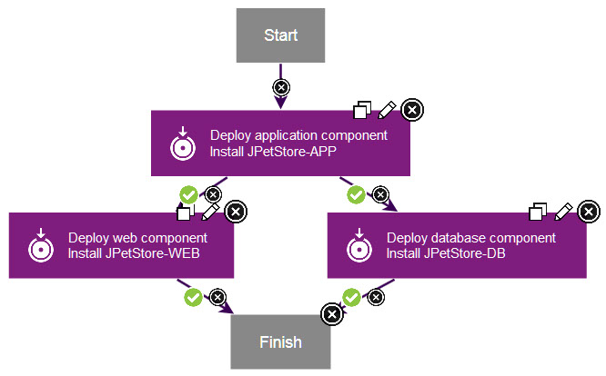

Application processes tie together component processes.
About this task
In this lesson, you create an application process to install
the components by calling each component process.
Procedure
-
Click the Applications tab, and then click the
JPetStore application.
-
Click Processes, and then click Create
Process.
Be sure to click the Processes tab within the application and not the
Processes tab at the top of the page, which leads to generic
processes.
- In the Create an Application Process window,
name the new application process Deploy JPetStore.
-
Accept the default values for the other fields, and click Save.
- Click the new process to open it in the process editor.
The process editor for application processes is similar to the
process editor for component processes. However, for application processes,
the steps are limited to calling component processes and a few utility
steps.
- Add a step to deploy the application component:
- From the list of steps, add an Install Component step
to the process editor.
This step calls component processes
that have a process type of Deployment.
- In the Edit Properties window,
name the step Deploy application component.
- In the Component list, select
the
JPetStore-APP component.
-
In the Component Process list, select the
Deploy
Component component process.
-
Click OK.
-
Similarly, add a step that is named Deploy component to deploy the web
and database components.
-
Verify that the
Start step is connected to the Deploy application
component step.
- Instead of connecting the remaining steps in a straight
line, follow these steps to connect the steps so that they run at
the same time.
Use the figure at the end of this step as
a reference point.
- Connect the
Deploy application component step
to the Deploy web component step.
- Connect the
Deploy application component step
to the Deploy database component step.
Now these two steps will run at the same time, after the
application step.
- Connect both the
Deploy web component step
and the Deploy database component step to the Finish step.
- Save the process.
Results
The complete application process deploys the application component
first and then deploys the web component and database components at
the same time. The application process looks like the following figure:
